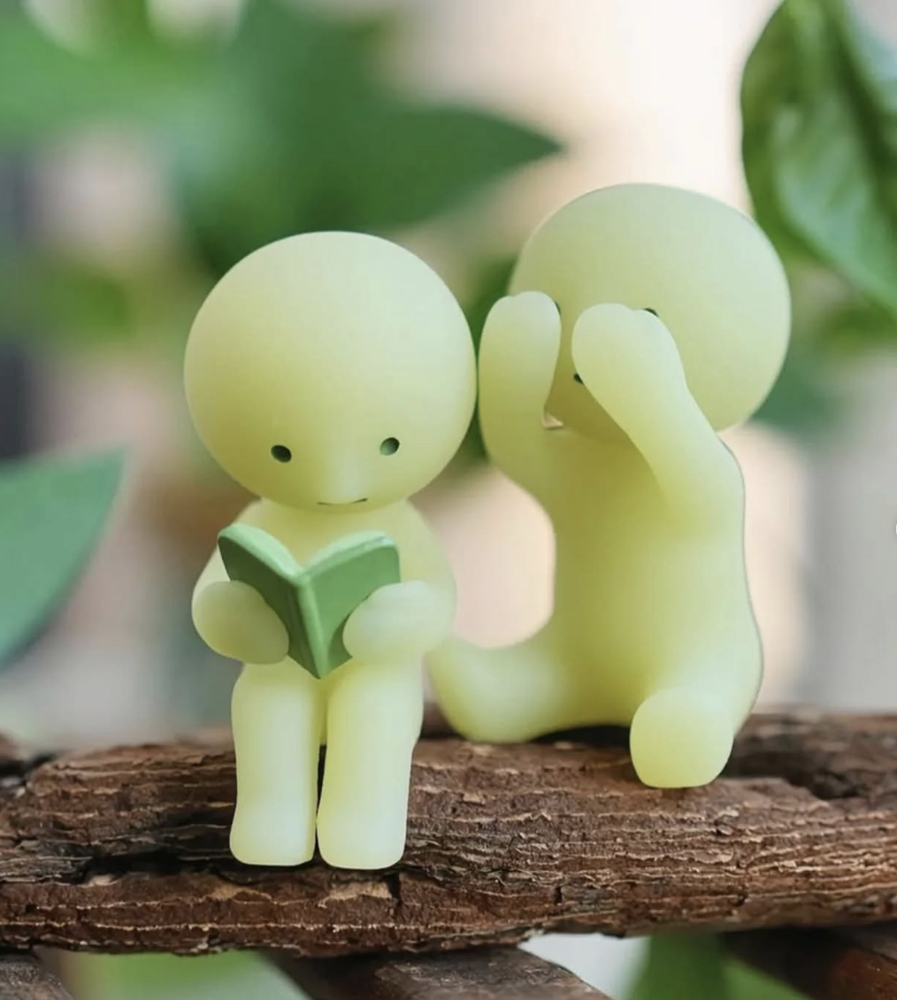
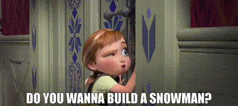
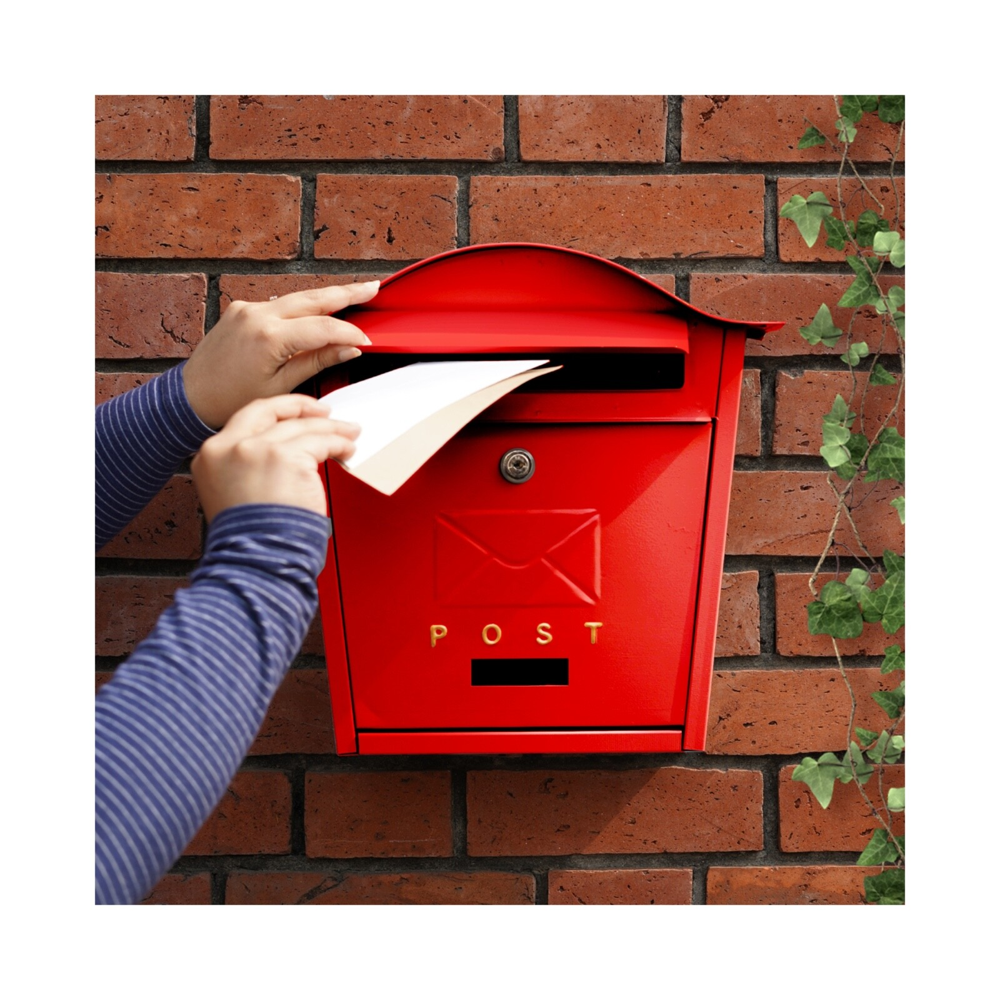
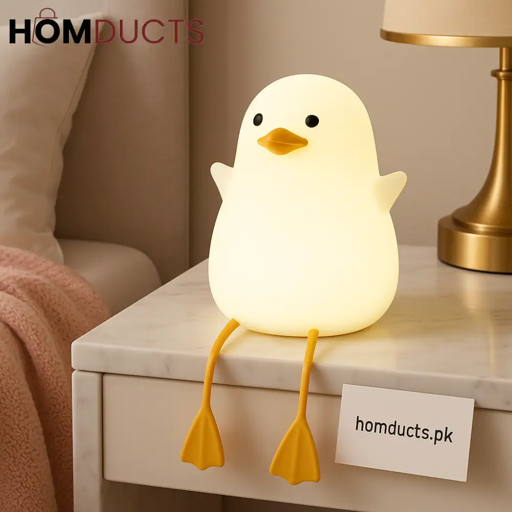
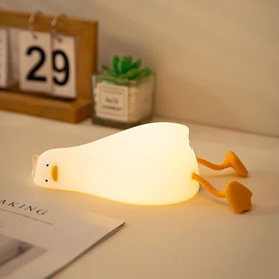

<div class="textcontainer">
<br></br>
<h3>Week 1: Final Project Proposal</h3>
<p class = "margin"></p>
<h4>Idea 1: The Anna Machine </h4>
<p class = "margin"></p>
<div>


<p>My first idea is to create a cute small robot (think Smiski dolls) that can move and speak. I named it the "Anna Machine" inspired by the movie "Frozen"--I want to be a lovable but utter nuisance to my roommates, much like Anna is to Elsa during this part of the film <3 The doll hopefully is cute enough to sit somewhere on their desks, and it would be able to move in basic ways (wave, nod, raise its hand) as well as say preset phrases ("Do you want to get dinner?" "Can I come over?" "What are you up to?"). </p>
<p>I imagine it'd be plugged in, but it would be cool if it had a charging station that it could magnetically charge to so that it is always in power and doesn't need to be turned off but still have free movement. I would also probably have to create a website that would allow me (and other roommates) to send messages/motions over. It would also probably be over Wi-Fi connection so that distance wouldn't be too much of a problem (I would love to harass friends/family back home too!)</p>
<p>Modifications could include that it can print out a message instead (say, the doll itself just raises its hand or does a little dance on top of a box that acts like a printer. The printer will then print out a message (imagine a receipt getting print out) that another person has sent).</p>
<p>Another modification can be that it copies my upper body and repeats it on the bot (so if I record a wave, it will mimic that wave and repeat it on the designated recepient's doll).</p>
</div>
<p class = "margin"></p>
<h4>Idea 2: Message4You</h4>
<p class = "margin"></p>
<div>

<p>Another idea I have is that I have some sort of box where my friends/loved ones/I can leave little text messages/letters or drawings for me and it will print it out on the set date and time they have selected. Maybe the box would light up when I "have mail" to pick up/listen to/read, and I can click a button to print out the picture/note. </p>
<p>It would be extra cool if there was a way for it to display videos/play audiofiles, but I know this might be difficult given the size of audiofiles! But it's a fun idea!</p>
<p>A modification I would make is having a general "random thoughts for ellie to hear" pot of messages that I could dispense whenever I wanted (clicking this button would not print out messages with set dates/times but rather the other ones that don't have an important time/place attached to them)</p>
</div>
<p class = "margin"></p>
<h4>Idea 3: Sleepy Lamp</h4>
<p class = "margin"></p>
<div>


<p>My third idea is a lamp that helps me regulate my sleep schedule better! I'm a bit of a late sleeper, and I think it could be really cute to have a lamp that reminds me that it's time for bed by growing more and more sleepy itself! The lamp would start off bright and alert (like the first duck photo), and as it gets closer to my set bedtime, it would slowly start to dim and look more and more tired (like the second duck photo). Once it hits my bedtime, it would be fully dimmed and "asleep", which hopefully will be a great visual cue that I should be in bed sleeping too.</p>
<p>A modification I would make is that it could also have an alarm function in the morning, where it slowly brightens up and "wakes up" itself to help me wake up more gently!</p>
<p>Another modification could be that it syncs with my watch (which tracks my sleep) so that it can naturally wake me up whenever I get a set amount of hours of sleep/before a set time based on my Google Calender schedule and/or manual inputs.</p>
</div>
</div>